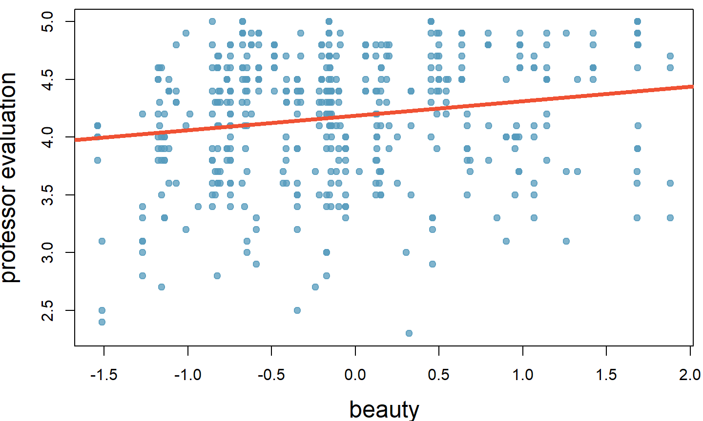
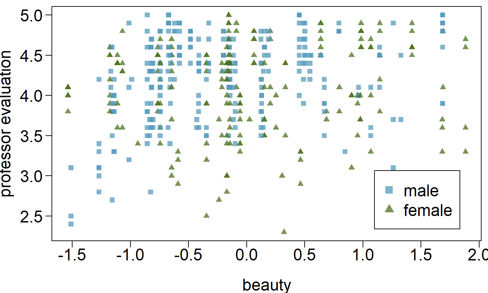

These notes use content from OpenIntro Statistics Slides by
Mine Cetinkaya-Rundel.
These notes use content from OpenIntro Statistics Slides by
Mine Cetinkaya-Rundel.
Data: Student evaluations of instructors’ beauty and teaching quality for 463 courses at the University of Texas.
Evaluations conducted at the end of semester, and the beauty judgements were made later, by six students who had not attended the classes and were not aware of the course evaluations (2 upper level females, 2 upper level males, one lower level female, one lower level male).
Professor evaluation score (higher score means better) vs. beauty score (a score of 0 means average, negative score means below average, and a positive score above average):

Which of the below is \(\underline{correct}\) based on the model output?
\[ \begin{eqnarray*} \hline & Estimate & Std. Error & t value & Pr(>|t|) \\ \hline (Intercept) & 4.19 & 0.03 & 167.24 & 0.00 \\ beauty & 0.13 & 0.03 & 4.00 & 0.00 \\ \hline R^2 = 0.0336 \end{eqnarray*} \]
Model predicts 3.36% of professor ratings correctly.
Beauty is not a significant predictor of professor evaluation.
Professors who score 1 point above average in their beauty score are tend to also score 0.13 points higher in their evaluation.
3.36% of variability in beauty scores can be explained by professor evaluation.
The correlation coefficient could be \(\sqrt{0.0336} = 0.18\) or \(-0.18\), we can’t tell which is correct.
Which of the below is \(\underline{correct}\) based on the model output?
\[ \begin{eqnarray*} \hline & Estimate & Std. Error & t value & Pr(>|t|) \\ \hline (Intercept) & 4.19 & 0.03 & 167.24 & 0.00 \\ beauty & 0.13 & 0.03 & 4.00 & 0.00 \\ \hline R^2 = 0.0336 \end{eqnarray*} \]

\(\color{red}{\text{Any interesting features?}}\)
Few females with very low beauty scores.
For a given beauty score, are male professors evaluated higher, lower, or about the same as female professors?
Difficult to tell from this plot only.
For a given beauty score, are male professors evaluated higher, lower, or about the same as female professors?
\[ \begin{eqnarray*} \hline & Estimate & Std. Error & t value & Pr(>|t|) \\ \hline (Intercept) & 4.09 & 0.04 & 107.85 & 0.00 \\ beauty & 0.14 & 0.03 & 4.44 & 0.00 \\ gender.male & 0.17 & 0.05 & 3.38 & 0.00 \\ \hline R^2_{adj} = 0.057 \end{eqnarray*} \]
For a given beauty score, are male professors evaluated higher, lower, or about the same as female professors?
\[ \begin{eqnarray*} \hline & Estimate & Std. Error & t value & Pr(>|t|) \\ \hline (Intercept) & 4.09 & 0.04 & 107.85 & 0.00 \\ beauty & 0.14 & 0.03 & 4.44 & 0.00 \\ gender.male & 0.17 & 0.05 & 3.38 & 0.00 \\ \hline R^2_{adj} = 0.057 \end{eqnarray*} \]
\[ \begin{eqnarray*} \hline & Estimate & Std. Error & t value & Pr(>|t|) \\ \hline (Intercept) & 4.6282 & 0.1720 & 26.90 & 0.00 \\ beauty & 0.1080 & 0.0329 & 3.28 & 0.00 \\ gender.male & 0.2040 & 0.0528 & 3.87 & 0.00 \\ age & -0.0089 & 0.0032 & -2.75 & 0.01 \\ formal.yes \tt{formal}: picture wearing tie\&jacket/blouse, levels: \tt{yes}, \tt{no} & 0.1511 & 0.0749 & 2.02 & 0.04 \\ lower.yes \tt{lower}: lower division course, levels: \tt{yes}, \tt{no} & 0.0582 & 0.0553 & 1.05 & 0.29 \\ native.non english & -0.2158 & 0.1147 & -1.88 & 0.06 \\ minority.yes & -0.0707 & 0.0763 & -0.93 & 0.35 \\ students \tt{students}: number of students & -0.0004 & 0.0004 & -1.03 & 0.30 \\ tenure.tenure track \tt{tenure}: tenure status, levels: \tt{non-tenure track}, \tt{tenure track}, \tt{tenured} & -0.1933 & 0.0847 & -2.28 & 0.02 \\ tenure.tenured & -0.1574 & 0.0656 & -2.40 & 0.02 \\ \hline \end{eqnarray*} \]
Just as the interpretation of the slope parameters take into account all other variables in the model, the hypotheses for testing for significance of a predictor also takes into account all other variables.
[\(H_0:\)] \(B_i = 0\) when other explanatory variables are included in the model.
[\(H_A:\)] \(B_i \ne 0\) when other explanatory variables are included in the model.
The p-value for age is 0.01. What does this indicate?
\[ \begin{eqnarray*} \hline & Estimate & Std. Error & t value & Pr(>|t|) \\ \hline ...\\ age & -0.0089 & 0.0032 & -2.75 & 0.01 \\ ...\\ \hline \end{eqnarray*} \] - Since p-value is positive, higher the professor’s age, the higher we would expect them to be rated.
If we keep all other variables in the model, there is strong evidence that professor’s age is associated with their rating.
Probability that the true slope parameter for age is 0 is 0.01.
There is about 1% chance that the true slope parameter for age is -0.0089.
The p-value for age is 0.01. What does this indicate?
\[ \begin{eqnarray*} \hline & Estimate & Std. Error & t value & Pr(>|t|) \\ \hline ...\\ age & -0.0089 & 0.0032 & -2.75 & 0.01 \\ ...\\ \hline \end{eqnarray*} \]
- Probability that the true slope parameter for age is 0 is 0.01.
- There is about 1% chance that the true slope parameter for age is -0.0089.
Tenure is a categorical variable with 3 levels: non tenure track, tenure track, tenured. Based on the model output given, which of the below is \(\underline{false}\)?
\[ \begin{eqnarray*} \hline & Estimate & Std. Error & t value & Pr(>|t|) \\ \hline ... \\ tenure.tenure track & -0.1933 & 0.0847 & -2.28 & 0.02 \\ tenure.tenured & -0.1574 & 0.0656 & -2.40 & 0.02 \\ \hline \end{eqnarray*} \]
Tenure is a categorical variable with 3 levels: non tenure track, tenure track, tenured. Based on the model output given, which of the below is \(\underline{false}\)?
\[ \begin{eqnarray*} \hline & Estimate & Std. Error & t value & Pr(>|t|) \\ \hline ... \\ tenure.tenure track & -0.1933 & 0.0847 & -2.28 & 0.02 \\ tenure.tenured & -0.1574 & 0.0656 & -2.40 & 0.02 \\ \hline \end{eqnarray*} \]
Which predictors do not seem to meaningfully contribute to the model, i.e. may not be significant predictors of professor’s rating score?
\[ \begin{eqnarray*} \hline & Estimate & Std. Error & t value & Pr(>|t|) \\ \hline (Intercept) & 4.6282 & 0.1720 & 26.90 & 0.00 \\ beauty & 0.1080 & 0.0329 & 3.28 & 0.00 \\ gender.male & 0.2040 & 0.0528 & 3.87 & 0.00 \\ age & -0.0089 & 0.0032 & -2.75 & 0.01 \\ formal.yes & 0.1511 & 0.0749 & 2.02 & 0.04 \\ \hline \color{red}{lower.yes} & \color{red}{0.0582} & \color{red}{0.0553} & \color{red}{1.05} & \color{red}{0.29} \\ \color{red}{native.non english} & \color{red}{-0.2158} & \color{red}{0.1147} & \color{red}{-1.88} & \color{red}{0.06} \\ \color{red}{minority.yes} & \color{red}{-0.0707} & \color{red}{0.0763} & \color{red}{-0.93} & \color{red}{0.35} \\ \color{red}{students} & \color{red}{-0.0004} & \color{red}{0.0004} & \color{red}{-1.03} & \color{red}{0.30} \\ \hline tenure.tenure track & -0.1933 & 0.0847 & -2.28 & 0.02 \\ tenure.tenured & -0.1574 & 0.0656 & -2.40 & 0.02 \\ \hline \end{eqnarray*} \]
Based on what we’ve learned so far, what are some ways you can think of that can be used to determine which variables to keep in the model and which to leave out?
Start with the full model
Drop one variable at a time and record \(R^2_{adj}\) of each smaller model
Pick the model with the highest increase in \(R^2_{adj}\)
Repeat until none of the models yield an increase in \(R^2_{adj}\)
\[ \begin{eqnarray*} &gender + age + formal + lower + native + minority + students + tenure & \color{red}{0.0839} \\ \hline Step 1 & gender + age + formal + lower + native + minority + students + tenure & 0.0642 \\ & beauty + age + formal + lower + native + minority + students + tenure & 0.0557 \\ & beauty + gender + formal + lower + native + minority + students + tenure & 0.0706 \\ & beauty + gender + age + lower + native + minority + students + tenure & 0.0777 \\ & beauty + gender + age + formal + native + minority + students + tenure & 0.0837 \\ & beauty + gender + age + formal + lower + minority + students + tenure & 0.0788 \\ & beauty + gender + age + formal + lower + native + students + tenure & \color{red}{0.0842} \\ & beauty + gender + age + formal + lower + native + minority + tenure & 0.0838 \\ & beauty + gender + age + formal + lower + native + minority + students & 0.0733 \\ \hline \end{eqnarray*} \]
\[ \begin{eqnarray*} \hline Step 2 & gender + age + formal + lower + native + students + tenure & 0.0647 \\ & beauty + age + formal + lower + native + students + tenure & 0.0543 \\ & beauty + gender + formal + lower + native + students + tenure & 0.0708 \\ & beauty + gender + age + lower + native + students + tenure &0.0776 \\ & beauty + gender + age + formal + native + students + tenure & \color {red}{0.0846} \\ & beauty + gender + age + formal + lower + native + tenure & 0.0844 \\ & beauty + gender + age + formal + lower + native + students & 0.0725 \\ \hline \end{eqnarray*} \]
\[ \begin{eqnarray*} \hline Step 3 & gender + age + formal + native + students + tenure & 0.0653 \\ & beauty + age + formal + native + students + tenure & 0.0534 \\ & beauty + gender + formal + native + students + tenure & 0.0707 \\ & beauty + gender + age + native + students + tenure & 0.0786 \\ & beauty + gender + age + formal + students + tenure & 0.0756 \\ & beauty + gender + age + formal + native + tenure & \color{red}{0.0855} \\ & beauty + gender + age + formal + native + students & 0.0713 \\ \hline Step 4 & gender + age + formal + native + tenure & 0.0667 \\ & beauty + age + formal + native + tenure & 0.0553 \\ & beauty + gender + formal + native + tenure & 0.0723 \\ & beauty + gender + age + native + tenure & 0.0806 \\ & beauty + gender + age + formal + tenure & 0.0773 \\ & beauty + gender + age + formal + native & 0.0713 \\ \end{eqnarray*} \]
## ## Call: ## lm(formula = profevaluation ~ beauty + gender + age + formal + ## lower + native + minority + students + tenure, data = d) ## ## Residuals: ## Min 1Q Median 3Q Max ## -1.79845 -0.37270 0.09849 0.39052 0.93273 ## ## Coefficients: ## Estimate Std. Error t value Pr(>|t|) ## (Intercept) 4.6282155 0.1720227 26.905 < 2e-16 *** ## beauty 0.1079530 0.0329357 3.278 0.001127 ** ## gendermale 0.2040127 0.0527509 3.867 0.000126 *** ## age -0.0089405 0.0032458 -2.755 0.006115 ** ## formalyes 0.1511348 0.0749453 2.017 0.044328 * ## loweryes 0.0581603 0.0553270 1.051 0.293723 ## nativenon english -0.2157998 0.1146764 -1.882 0.060503 . ## minorityyes -0.0706677 0.0762621 -0.927 0.354607 ## students -0.0003726 0.0003603 -1.034 0.301536 ## tenuretenure track -0.1932547 0.0846549 -2.283 0.022903 * ## tenuretenured -0.1574315 0.0655919 -2.400 0.016791 * ## --- ## Signif. codes: 0 '***' 0.001 '**' 0.01 '*' 0.05 '.' 0.1 ' ' 1 ## ## Residual standard error: 0.5206 on 452 degrees of freedom ## Multiple R-squared: 0.1037, Adjusted R-squared: 0.0839 ## F-statistic: 5.231 on 10 and 452 DF, p-value: 2.748e-07
Start with regressions of response vs. each explanatory variable
Pick the model with the highest \(R^2_{adj}\)
Add the remaining variables one at a time to the existing model, and once again pick the model with the highest \(R^2_{adj}\)
Repeat until the addition of any of the remaining variables does not result in a higher \(R^2_{adj}\)
Backward elimination with the p-value approach:
Start with the full model
Drop the variable with the highest p-value and refit a smaller model
Repeat until all variables left in the model are significant
Forward selection with the p-value approach:
Start with regressions of response vs. each explanatory variable
Pick the variable with the lowest significant p-value
Add the remaining variables one at a time to the existing model, and pick the variable with the lowest significant p-value
Repeat until any of the remaining variables does not have a significant p-value
\[ \begin{eqnarray*} \hline Full & beauty & gender & age & formal & lower & native & minority & students & tenure & tenure \\ & & male & & yes & yes & nonenglish & yes & & tenure track & tenured \\ & 0.00 & 0.00 & 0.01 & 0.04 & 0.29 & 0.06 & \color{red}{0.35} & 0.30 & 0.02 & 0.02 \\ \hline Step 1 & beauty & gender & age & formal & lower & native & & students & tenure & tenure \\ & & male & & yes & yes & nonenglish & & & tenure track & tenured \\ & 0.00 & 0.00 & 0.01 & 0.04 & \color{red}{0.38} & 0.03 & & 0.34 & 0.02 & 0.01 \\ \hline Step 2 & beauty & gender & age & formal & & native & & students & tenure & tenure \\ & & male & & yes & & nonenglish & & & tenure track & tenured \\ & 0.00 & 0.00 & 0.01 & 0.05 & & 0.02 & & \color{red}{0.44} & 0.01 & 0.01\\ \hline Step 3 & beauty & gender & age & formal & & native & & & tenure & tenure \\ & & male & & yes & & nonenglish & & & tenure track & tenured \\ & 0.00 & 0.00 & 0.01 & \color{red}{0.06} & & 0.02 & & & 0.01 & 0.01 \\ \hline Step 4 & beauty & gender & age & & & native & & & tenure & tenure \\ & & male & & & & nonenglish & & & tenure track & tenured \\ & 0.00 & 0.00 & 0.01 & & & \color{red}{0.06} & & & 0.01 & 0.01 \\ \hline Step 5 & beauty & gender & age & & & & & & tenure & tenure \\ & & male & & & & & & & tenure track & tenured \\ & 0.00 & 0.00 & 0.01 & & & & & & 0.01 & 0.01 \\ \end{eqnarray*} \]
\[ \begin{eqnarray*} \hline Full & beauty & gender & age & formal & lower & native & minority & students & tenure & tenure \\ & & male & & yes & yes & nonenglish & yes & & tenure track & tenured \\ & 0.00 & 0.00 & 0.01 & 0.04 & 0.29 & 0.06 & \color{red}{0.35} & 0.30 & 0.02 & 0.02 \\ \hline Step 1 & beauty & gender & age & formal & lower & native & & students & tenure & tenure \\ & & male & & yes & yes & nonenglish & & & tenure track & tenured \\ & 0.00 & 0.00 & 0.01 & 0.04 & \color{red}{0.38} & 0.03 & & 0.34 & 0.02 & 0.01 \\ \hline Step 2 & beauty & gender & age & formal & & native & & students & tenure & tenure \\ & & male & & yes & & nonenglish & & & tenure track & tenured \\ & 0.00 & 0.00 & 0.01 & 0.05 & & 0.02 & & \color{red}{0.44} & 0.01 & 0.01\\ \hline Step 3 & beauty & gender & age & formal & & native & & & tenure & tenure \\ & & male & & yes & & nonenglish & & & tenure track & tenured \\ & 0.00 & 0.00 & 0.01 & \color{red}{0.06} & & 0.02 & & & 0.01 & 0.01 \\ \hline Step 4 & beauty & gender & age & & & native & & & tenure & tenure \\ & & male & & & & nonenglish & & & tenure track & tenured \\ & 0.00 & 0.00 & 0.01 & & & \color{red}{0.06} & & & 0.01 & 0.01 \\ \hline Step 5 & beauty & gender & age & & & & & & tenure & tenure \\ & & male & & & & & & & tenure track & tenured \\ & 0.00 & 0.00 & 0.01 & & & & & & 0.01 & 0.01 \\ \end{eqnarray*} \] Best model: beauty + gender + age + tenure
The two approaches are similar, but they sometimes lead to different models, with the adjusted \(R^2\) approach tending to include more predictors in the final model.
When the sole goal is to improve prediction accuracy, use \(R^2\) . This is commonly the case in machine learning applications.
When we care about understanding which variables are statistically significant predictors of the response, or if there is interest in producing a simpler model at the potential cost of a little prediction accuracy, then the p-value approach is preferred.
Regardless of the approach we use, our job is not done after variable selection – we must still verify the model conditions are reasonable.